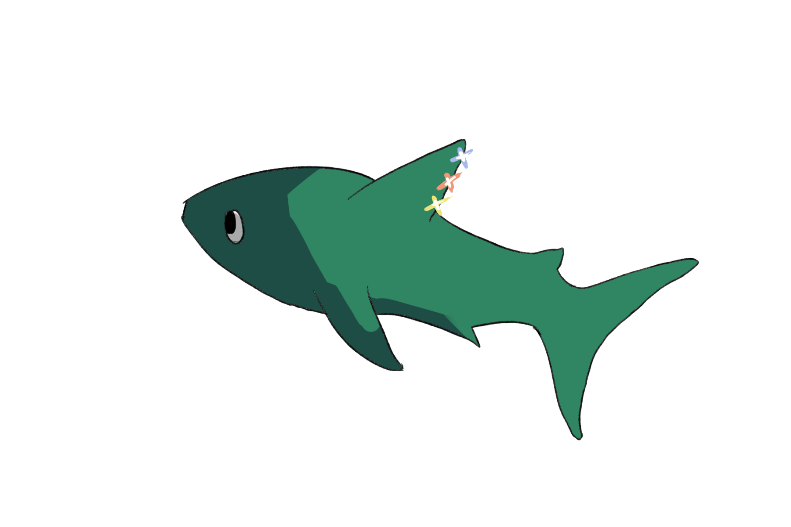

Luman
Luminopterids were named using the roots lumino (light), -pter (fin), and -id (noun-forming suffix).
The aquatic species communicates using bioluminescent dorsal fins, which are invisible to their own eyes. Luminopterids travel in a conic formation, in which the leader of the group is able to transmit a message which gets carried along to the very end.
